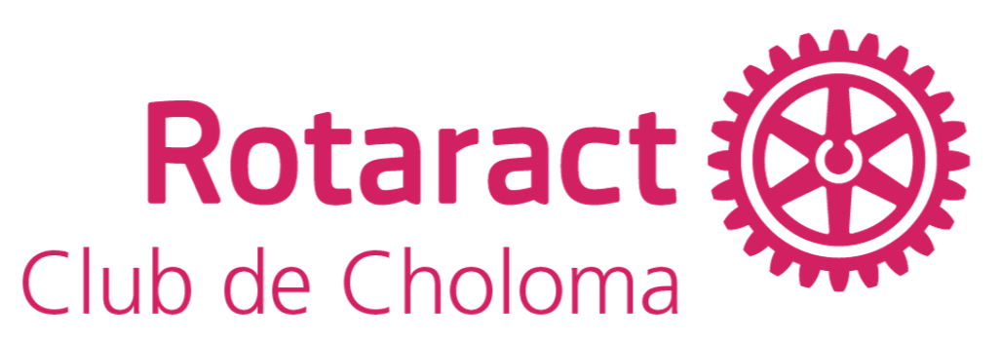
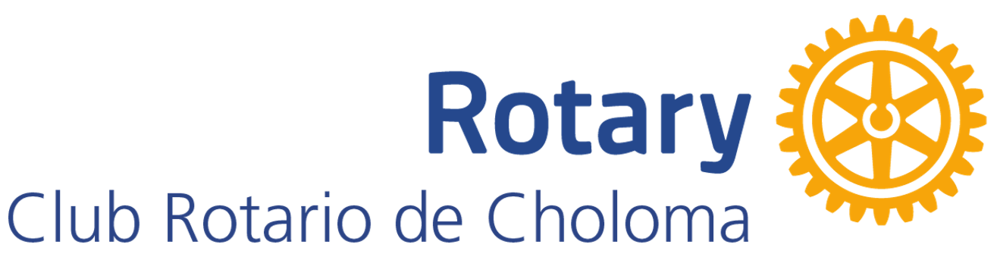

Rotaract & Rotary Choloma
¿Quienes somos?


ROTARY INTERNACIONAL
Rotary es una red Mundial compuesta Por vecinos, amigos, lideres y personas
profesionales dedicadas a solucionar problemas, quienes ven un planeta en que
las personas se unen y toman accion para generar un cambio perdurable en el
mundo, sus comunidades y en si mismos.
Como comunidad rotaria asumimos la responsabilidad de tomar accion, a fin de abordar los problemas mas perniciosos
que afectan a la humanidad. A traves de las
siguientes areas de interes:
- Promovemos la paz
- Combatimos enfermedades
- Protegemos a madres e hijos
- Fomentamos la educación
- Desarrollamos las economías locales
- Protegemos el medio ambiente
- Proporcionamos acceso al agua salubre y fomentamos buenos hábitos de higiene